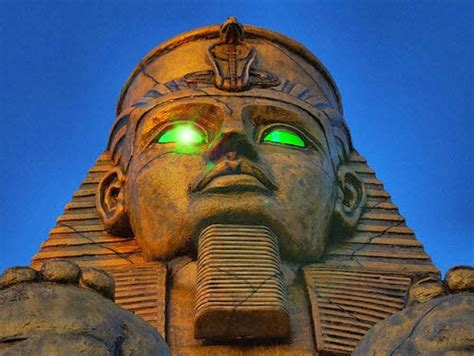
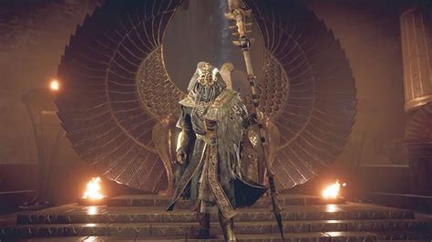

Nothing instilled more fear in the tomb thieves and archaeologists of the time past than the possibility of attracting a curse upon themselves with dire consequences. In ancient Egyptian times, curses were common and were associated with symbols of authority like pharaohs whether alive or dead. The curses were sometimes faced on the tomb entrance to protect the dead and the monuments from being disturbed or looted. The writings on the entry to the tomb often spoke of the disease coming back to life to revenge or call judgment upon the person who disturbs them. Those who ignored such warnings did so at their peril, and anything that happened to them was linked to their act of defiance to the warning.
The curse of Pharaohs was allegedly cast upon people who disturbed the mummy of an ancient Egyptian, especially the Pharaohs. The curse does not differentiate between the tomb raiders and the archaeologists and was said to causes bad luck, illness, and even death. However, historians have debated whether the Egyptian mummy curses are just tales or are indeed effective in the modern world today. The tales of the curses have since shifted from condemning the disturbance of the spirit of the dead to entertaining horror film audience. The stories and rumors surrounding the curse of Pharaohs have existed for centuries dating back to the Medieval and Early Modern period.
The curse tales stated that the tombs and the burial sites should not be tampered with because the mummies resided in them, and that they possessed unknown and dark qualities that would cause harm and death to the person who disturbed them. The stories of the curse of Pharaohs dated back to the 18th and 19th centuries and multiplied after the discovery of the Tomb of Tutankhamun. The curses were placed on the tomb and its surrounding by the priests to protect both the mummies and their spiritual journeys after death rather than as a warning to potential tomb thieves. Curses were not common on the tombs of ancient Egypt, but they were occasionally used to protect the burial place and the spirits of the dead. The curses related to the tomb were rare because the idea of desecration was unimaginable that even writing about it would instill fear upon the writer. The tomb curses were popular in private tombs of the Old Kingdom era. They would be inscribed on the more public part of the tomb, walls, false doors, statues, and coffins. Tomb Curses were found in the tomb of Ankhtifi and the Tomb of Khentika Ikhekhi, both of the 9 to 10th dynasty. The curses included an extensive list of punishment like loss of honor and earthly position, starvation, drowning at sea, and lacking a successor to their earthly thrones among other curses. Curses in the modern era are rare though are thought to be more severe sometimes invoking the fury of Thoth or the violent destruction of the Sekhmet. These modern tomb curses include people meeting their death by a disease that no doctor can cure.
The legends about the "Curse of the Pharaoh" date back to the 7th century AD when the Arabs conquered Egypt, and the Arabs were not able to read the hieroglyph. The preservation of mummies was a strange thing to the Arabs who were told many stories about the mummies including the curse that would befall them if they disturbed the bodies to the point that they believed that the Egyptians were able to protect their tombs by magical means. The Arabs revered the mummies or their tombs that they could not go near them. The curses were perceived simply as bad luck that was associated with handling the mummies or tombs against the Egyptian wishes. Several incidences that have shaped modern history have been linked to the curse of Pharaohs. Some of these incidences cannot be scientifically proven, but those who believe in the curse of mummies need no further proof. The catastrophic Titanic ship incident has been linked to the Egyptian Mummy which among the cargos that were sent from England to New York upon the request of Lord Centerville. The mummy was a body of an Egyptian prophetess who had enjoyed popularity during the reign of Amenhotep IV. Her grave has since been found in Tell el-Amarna with curse inscriptions on one of the artifacts. Zahi Hawass, an archaeologist excavating at Kom Abu-Bellou, lost his cousin on the day he transported artifacts from the site of excavation. His uncle died on the first anniversary while his aunt died on the third anniversary of the cousin. Years later Zahi encountered a curse inscription on the tomb of the builders of the pyramids at Giza. Zahi later recorded how he was disturbed by the noises of children which were linked to the removal of child mummies from Bahariya Oasis with the noises stopping when the mummy of the father was reunited with the child mummies in the museum.